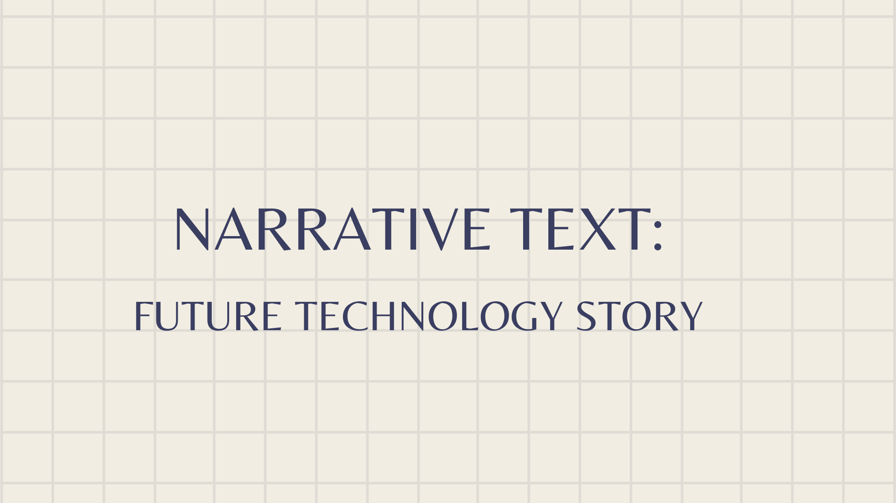
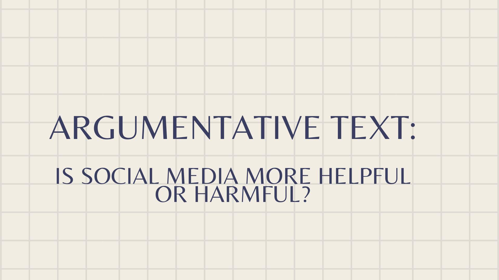
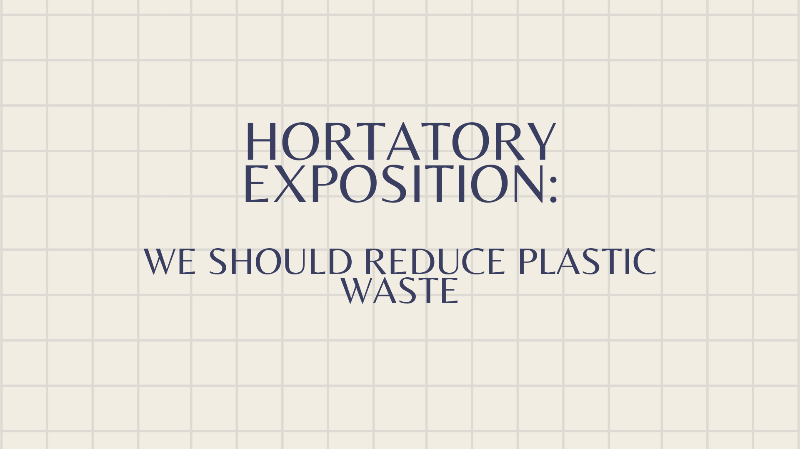
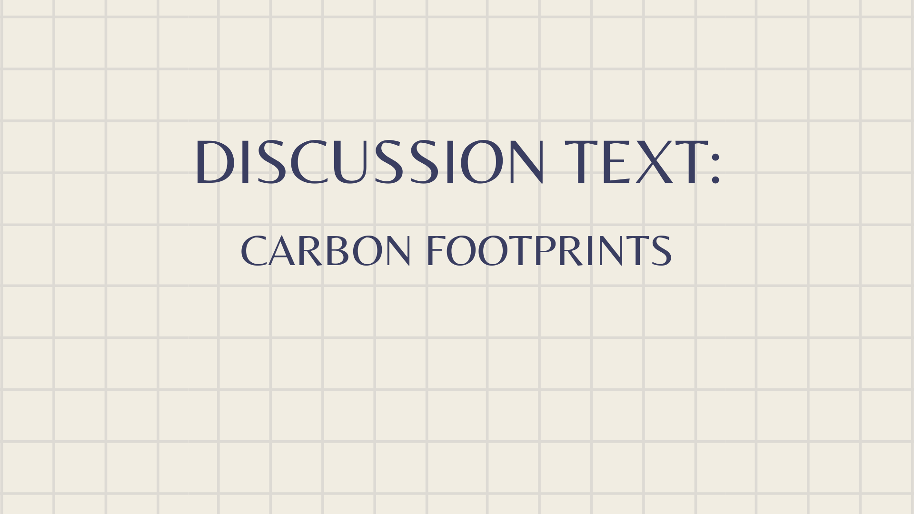

The four units
Each unit follows the same sequence: pre-listening, while-listening, then a review.

Narrative Text
Technology Story. Students follow a sequence of events, characters, and setting.
Open unit Download .h5p
Argumentative Text
Is social media more helpful or harmful? Students identify the writer's position and reasons.
Open unit Download .h5p
Hortatory Exposition
We should reduce plastic waste. Students pick out recommendations and supporting arguments.
Open unit Download .h5p
Discussion Text
Carbon footprint. Students weigh arguments for and against an issue before reaching a view.
Open unit Download .h5pAbout these materials
The materials were developed as part of a Research and Development study using the ADDIE model. The requirements came from a review of the Phase F English learning outcomes and a consultation with the English teacher about classroom conditions.
- Researcher
- Tio Alfareza